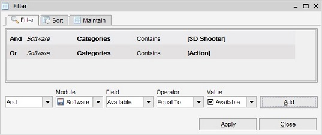
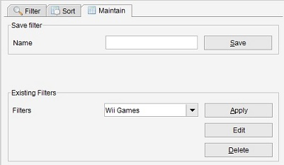

By default, all items are shown in a view. To find specific items you can specify a filter.
There are two option for filtering, you can use the quick filter bar which is
located in the upper part of the main screen or you can use the filter dialog which allows for filtering on more then one
field / value and has more options.
Quick Filter bar
By default a quick filter bar is shown in the upper part of the main screen.
You can disable or enable the quick filter bar from the settings menu
(the "Toggle Quick Filter bar" option) or by pressing the F7 key.
Using this bar you can quickly
filter on a single value. Select a field from the list (the first drop down). Then, select or type a value
in the second field.
The following options are always available in the drop down:
-
Is Filled. Filter on the items where the value is filled with any value for the selected field.
-
Is Empty. Filter on the items where the value is blank for the selected field.
Apply the filter by clicking on the icon.
Undoing a filter
To undo a filter click on the icon.
Saved Filters
If there are saved filters present, you can select a filter from the "Filters" list (right hand side of the quick filter bar).
Please read the next chapter for advanced filtering and how to create and save a filter.
Filter Dialog
Menu Path: Filter > Filter
Go to the filter dialog via the "Filter" button, which is available from the tool bar.
The dialog has three tabs; the "Filter", "Sort" and "Maintain". In the filter tab the filter is defined.
The sort tab allows for defining the way the result should be sorted and the manage tab allows for filters to be saved for reuse and
saved filters to be deleted or edited.

Creating a Filter
A filter is made up of entries. In the "filter" tab you can define these entries. In the lower part you define
which field should be filtered on, the value and the operator used for comparison. After entering all the information press
"add" to add the entry to filter.
And / Or
In the first list you can select the inclusion type, "and" or "or". The first entry in the filter always is "and"
so you can not select this. For the next entries however you can choose to include the entry as "and" or as "or".
Example: You want to filter on movies having the state "seen" or "want to have".
The filter should then have the follow entries: And State equal to "seen". Or State equal to "want to have".
Module
The module you want to select a field from. Mostly this list will only contain the current module, such as the "Software" module
or the "Book" module. However when a module has a child module such as is the case with the "Audio CD" module
(having "Audio Track" module as child) you can select either the parent or the child module.
The selected module determines the fields to be shown in the fields drop down.
Field
Shows the fields belonging to the selected module. Not all fields might be shown as there are fields on which no
filter can be created.
Operator
Here you can define how the value of the field should be compared. By default the "Equal To" operator is selected
which means the value should be exactly the same. The operators speak pretty much for themselves
("is filled", "is empty", "contains", ..). Note that you can create multiple entries for one field. This allows for
filtering on one field using multiple types of operators (such as "is empty" combined with "or contains 'test').
Value
The way this field represents itself depends on the field you have selected. Either this will contain a list of fixed values or allows you to enter a value yourself (by typing).
Editing Filter Entries
You can modify any entry in the entry list by double-clicking it. You can then edit the filter in the lower part off the screen. After making the desired changes you add the entry by pressing the "add" button.
Removing Filter Entries
You can remove the entry by double-clicking it.
Sort
In the sort tab you can define how the result should be sorted. This is explained in the Sort section of this help.
Managing filters
To manage filters you go to the "manage" tab. Here you can save a filter so it can be re-used. Saved filters will appear in the quick filter toolbar.

Saving a new Filter
You can save a filter so it can be reused. In the manage tab there is an area called "Save filter". Enter a name for the
filter and press the "save" button. The filter is now saved and can be selected from the list in this tab or from the quick filter bar.
Modifying an existing Filter
Select the filter you want to modify from the list in the "Existing filters" area and press the "edit" button. The filter tab is opened, showing the entries of the selected filter. Make the changes. Return to the "manage" tab to save the changes you have made.
Deleting an existing Filter
Select the filter you want to delete from the list in the "Existing filters" area and press the "delete" button.
Applying an existing Filter
You can apply a saved filter either by selecting it from the quick filter tool bar or by selecting it from the list in the
manage tab by pressing the "apply" button.
 icon.
icon.